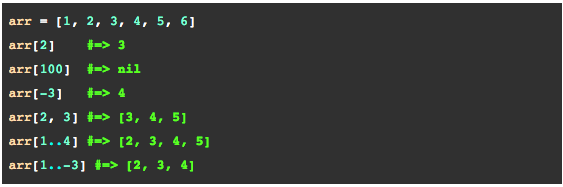
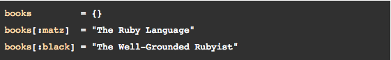

by Lawrence Yu
Posted on January 30, 2015
In this week’s technical blog, we will cover arrays and hashes. Let’s start off discussing about arrays. An array is a special variable that can store multiple objects inside of it. Arrays are one of the oldest data structures ever developed and are still being used by almost every programming language. The objects that can be stored inside an array can just about be anything like an integer, a string, and in some languages like Ruby, other arrays! Arrays can be thought of as an ordered list of the objects you decide to store in it. The key feature of arrays is that it assigns integers to index the collection of object in it. For example, the first object of an array would have an integer index value of 0, whereas the second object would have an index of 1, and so on and so forth.
Figure 1. Code example of arrays
Also known as associative array, hash is another special variable, which can store a variety of objects inside of it. Unlike arrays though, an object in a hash is indexed with another object! A hash can be thought of as a dictionary-like collection of values and keys. Each object in the hash acts as a key and has a corresponding value object. Comparatively, hashes are normally much more efficient than arrays. The reason being for hashes, if someone needed to look up information on something, one would simply need to know the key extrapolate the corresponding value. Arrays on the other hand may require time consuming methods in order to iterate over the array in to find the value they need.
Figure 2. Code example of hashes